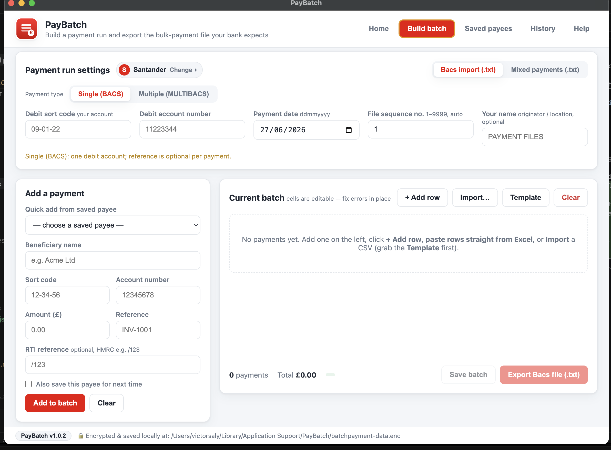
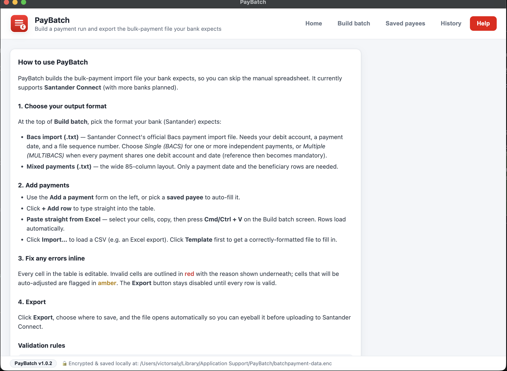

PayBatch turns your payment list into the exact import file your bank expects — validated as you type, then exported in one click. It runs entirely on your own computer, so nothing ever leaves your machine.
✅ Works today with: Santander Connect & Bacs Standard 18 — each reproduced byte-for-byte from the bank's own import spec.
Free · open source · macOS · Windows · Linux — no account, no sign-up.

Santander Connect (Bacs import & mixed payments) and cross-bank Bacs Standard 18 — reproduced to the byte.
Every cell is checked live. Bad sort codes, accounts and amounts are flagged before export, so the bank won't reject your file.
Copy your rows in Excel or Google Sheets and paste straight in — columns are detected automatically.
In plain terms: your payees and bank details are scrambled and locked to your computer, so other apps can't read them and they never go online. PayBatch only ever reaches the internet to check for an update.
Reuse beneficiaries and reload past runs in a click. No more hunting through old spreadsheets.
A gentle banner tells you when a new version ships, with a full changelog inside the app.
No clutter, no jargon — just the steps to a valid payment file.

Choose the bank and the file type your channel expects.
Type, paste from Excel, or import a CSV. Fix any flagged rows inline.
Export the file — it opens automatically — then upload it to your bank.
More UK banks are on the way. Want one prioritised? Open an issue.
We'd rather be honest than oversell. Here's the straight version.
Free for macOS, Windows and Linux. Pick your platform:
“Is it safe to open?” Yes. PayBatch is free and fully open source — you can read every line on GitHub. It isn't code-signed with a paid certificate yet, so on first launch your OS may show a routine warning (normal for independent apps):
🍎 macOS: right-click the app → Open → Open. 🪟 Windows: More info → Run anyway.
Code signing is on the roadmap to remove these prompts entirely.